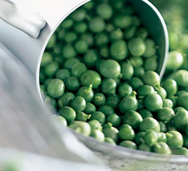

Peas

What are Peas?
A type of legume, peas grow inside long, plump pods. As is the case with all types of legume, their sugars start to turn to starch as shortly after they're picked, so they are best eaten just-picked. Frozen peas are put on ice very soon after being picked (within three hours) and the flavour can be superior to that of fresh peas harvested a couple of days previously.